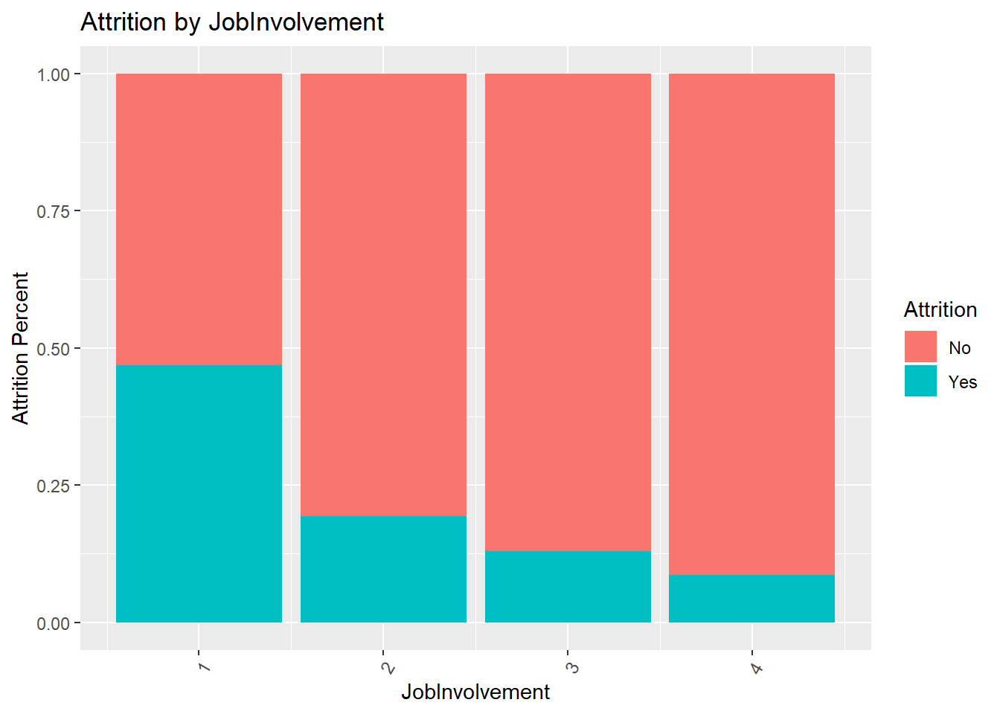
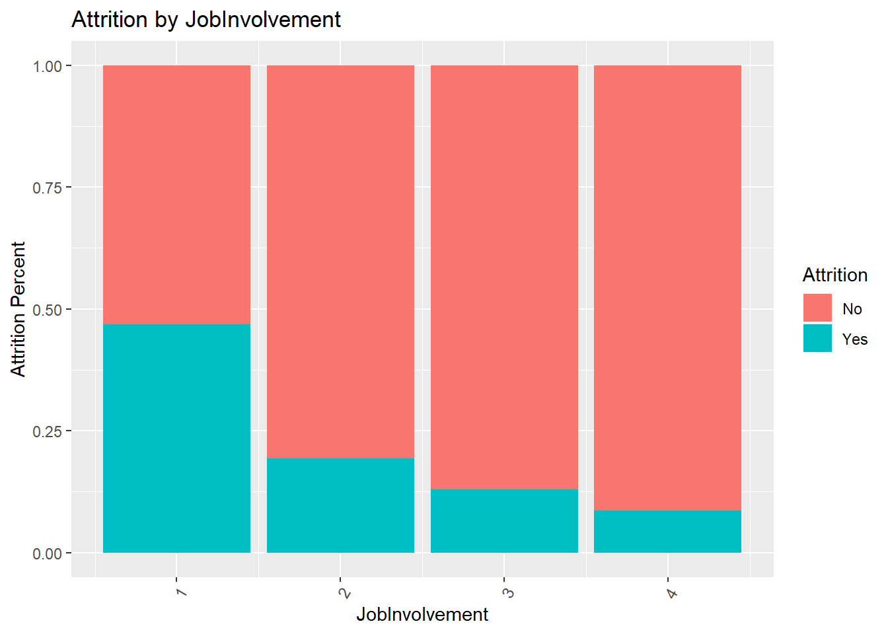
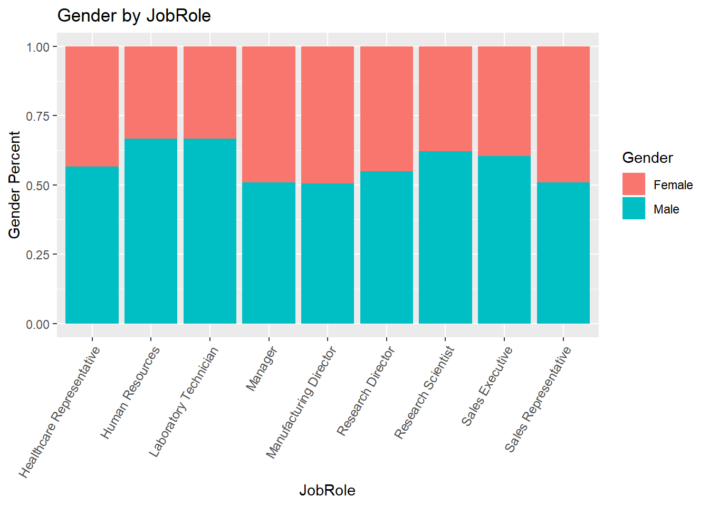
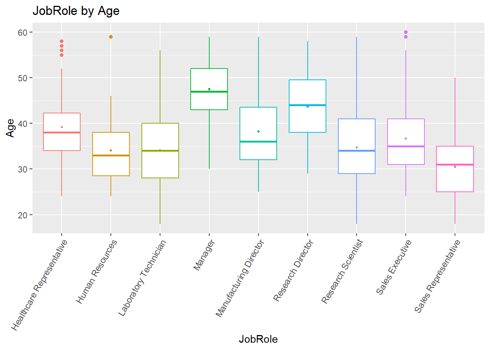

Case Study 2 - Employee Turnover Analysis
Executive Summary
Background:
- Frito-Lay is always about people; it is a place that seeks out different perspectives and celebrates diversity at every level of the organization
- Frito-Lay has engaged DDSAnalytics to leverage data science and take the Talent Management to next level
- Scope of services includes workforce planning, employee training, and reducing/preventing voluntary employee turnover
Objectives:
- Identify the top three factors that contribute to employee turnover
- Build a robust model to predict attrition
- Obtain job role specific insights that will help with employee retention, satisfaction, and professional development
Preparation
First, we will import the dataset provided. There are some variables in the dataset that contain same value for all the observations - these variables will cause us issues when we try to calculate correlations. So we will remove these variables from the dataset. Then we will check if any of the variables contain missing values.
All the variables contain values for all the observations. We will now continue with data exploration for variables selection.
Data Exploration
We will do the following to identify the variables influencing attrition.
- Assess the correlation of various factor variables on attrition - we will do this by plotting percentage stacked bars for attrition for different values of factors to see if any specific values of the factor influence the attrition.
- Assess the correlation of various continuous variables on attrition - we will use overlayed histograms to assess if we can identify the data ranges of the variable that influence attrition.
- Obtain correlation coefficients for the relevant variables - we will run correlation test and use estimates to assess the correlation.
- Identify the set of variables that impact attrition - we will use the results from above 3 steps for this.
 

Based on the above stacked bars, we infer that the following factors potentially influence the attrition: EnvironmentSatisfaction, JobInvolvement, JobLevel, JobRole, MaritalStatus, OverTime, StockOptionLevel, WorkLifeBalance

Based on the above histograms, we infer that the following variables potentially influence the attrition: Age (high attrition for less than 25), TotalWorkingYears (high attrition for less than 5), YearsAtCompany (high attrition for 0), YearsInCurrentRole (high attrition for 0), YearsWithCurrManager (high attrition for 0).
Now, we will convert string factors into integer factors and look at the correlation coefficients.
## Attribute Estimate p.value
## 1 OverTime 0.27203659 3.164202e-16
## 2 MaritalStatus 0.19701495 4.620847e-09
## 3 JobInvolvement -0.18779341 2.393172e-08
## 4 TotalWorkingYears -0.16720612 7.058845e-07
## 5 JobLevel -0.16213644 1.529785e-06
## 6 YearsInCurrentRole -0.15621571 3.665017e-06
## 7 MonthlyIncome -0.15491496 4.421756e-06
## 8 Age -0.14938358 9.657758e-06
## 9 StockOptionLevel -0.14868030 1.064537e-05
## 10 YearsWithCurrManager -0.14678224 1.381421e-05
## 11 YearsAtCompany -0.12875406 1.400387e-04
## 12 JobSatisfaction -0.10752094 1.492881e-03
## 13 JobRole 0.09053860 7.536574e-03
## 14 WorkLifeBalance -0.08978971 8.050071e-03
## 15 DistanceFromHome 0.08713629 1.013034e-02From the histograms, we have identified potential grouping of some of the variables that may result in higher correlation. Lets add a few derived group variables and re-look at the correlation coefficients.
## Attribute Estimate p.value
## 1 OverTime 0.2720366 3.164202e-16
## 2 TotalWorkingYearsGroup -0.2057122 9.095043e-10
## 3 YearsWithCurrManagerGroup -0.2013061 2.091082e-09
## 4 MaritalStatus 0.1970150 4.620847e-09
## 5 JobInvolvement -0.1877934 2.393172e-08
## 6 YearsInCurrentRoleGroup -0.1792353 1.024982e-07
## 7 TotalWorkingYears -0.1672061 7.058845e-07
## 8 JobLevel -0.1621364 1.529785e-06
## 9 YearsInCurrentRole -0.1562157 3.665017e-06
## 10 MonthlyIncome -0.1549150 4.421756e-06
## 11 Age -0.1493836 9.657758e-06
## 12 StockOptionLevel -0.1486803 1.064537e-05
## 13 YearsWithCurrManager -0.1467822 1.381421e-05
## 14 AgeGroup -0.1409388 3.019880e-05
## 15 YearsAtCompany -0.1287541 1.400387e-04Now, let’s use GGPairs to assess collinearity of some of these top variables.
From the above plot, we can infer that the following variables have high correlation. It is enough if we include one of these variables in the model.
- JobLevel, TotalWorkingYears, MonthlyIncome
- YearsWithCurrManager, YearsInCurrentRole
Next up, we will assess the models based on specific sets of the top variables.
Classification Model for Attrition
First, we will assess a few kNN models using hyperparameter tuning, and look at the mean accuracy, sensitivity, and specificity metrics to compare them.
kNN Model 1 - “OverTime”, “TotalWorkingYearsGroup”, “MaritalStatus”
## k Accuracy Sensitivity Specificity
## 14 14 0.8527969 0.9932057 0.1267077kNN Model 2 - “OverTime”, “JobInvolvement”, “MaritalStatus”
## k Accuracy Sensitivity Specificity
## 8 8 0.8416092 0.9763623 0.1670082kNN Model 3 - “OverTime”, “TotalWorkingYears”, “MaritalStatus”
## k Accuracy Sensitivity Specificity
## 9 9 0.8495785 0.9840017 0.1531919kNN Model 4 - “OverTime”, “YearsWithCurrManagerGroup”, “MaritalStatus”
## k Accuracy Sensitivity Specificity
## 7 7 0.8521073 0.9862799 0.1377587kNN Model 5 - “OverTime”, “YearsWithCurrManager”, “MaritalStatus”
## k Accuracy Sensitivity Specificity
## 6 6 0.8485824 0.983589 0.1703127The kNN models give us good accuracy and sensitivity metrics. However, these models are failing to meet the criteria of at least 60% of specificity requirement. Let us explore Naive Bayes models now.
Naive Bayes Model 1 - “OverTime”, “TotalWorkingYearsGroup”, “MaritalStatus”
## Seed Accuracy Sensitivity Specificity
## 50.5000000 0.8306513 0.8718446 0.4796088Naive Bayes Model 2 - “OverTime”, “JobInvolvement”, “MaritalStatus”
## Seed Accuracy Sensitivity Specificity
## 50.5000000 0.8478927 0.8635297 0.5820551Naive Bayes Model 3 - “OverTime”, “TotalWorkingYears”, “MaritalStatus”
## Seed Accuracy Sensitivity Specificity
## 50.5000000 0.8539464 0.8713415 0.6291760Naive Bayes Model 4 - “OverTime”, “YearsWithCurrManagerGroup”, “MaritalStatus”
## Seed Accuracy Sensitivity Specificity
## 50.5000000 0.8470498 0.8670088 0.5951530Naive Bayes Model 5 - “OverTime”, “YearsWithCurrManager”, “MaritalStatus”
## Seed Accuracy Sensitivity Specificity
## 50.5000000 0.8501533 0.8681159 0.5874116Based on the above comparisions, the Naive Bayes model with OverTime, TotalWorkingYears, and MaritalStatus gives us a robust model for predicting Attrition that meets our criteria of at least 60% of sensitivity and specificity. We will proceed with this model, obtain predictions for the validation dataset, and export the predictions in required format.
Regression Model for Income
We will now work a regression model to calculate the Monthly Income. For this, first, let us look at the correlation coefficients for MonthlyIncome variable.
## Attribute Estimate p.value
## 1 JobLevel 0.9516400 0.000000e+00
## 2 TotalWorkingYears 0.7785112 8.875584e-178
## 3 YearsAtCompany 0.4913790 4.486580e-54
## 4 Age 0.4842883 2.340963e-52
## 5 YearsInCurrentRole 0.3618405 2.635495e-28
## 6 TotalWorkingYearsGroup 0.3494785 2.153804e-26
## 7 YearsWithCurrManager 0.3284875 2.458286e-23
## 8 YearsSinceLastPromotion 0.3159116 1.293307e-21
## 9 AgeGroup 0.2232618 2.737298e-11
## 10 NumCompaniesWorked 0.1558943 3.839539e-06
## 11 Attrition -0.1549150 4.421756e-06
## 12 YearsInCurrentRoleGroup 0.1522633 6.452522e-06
## 13 YearsWithCurrManagerGroup 0.1445726 1.863429e-05
## 14 Education 0.1271314 1.701095e-04
## 15 YearsAtCompanyGroup 0.0784419 2.067082e-02Let us look at GGPairs for the top correlated variable from above to assess collinearity.
The plot doesn’t signify collinearity. Lets us look at the scatterplot of TotalWorkingYears vs. MonthlyIncome to assess if a data transformation or higher-order regression terms help.
The scatterplot doesn’t suggest the need for data transformation or higher order regression terms. Let us assess linear models based on the top factors.
Linear Model 1 - MonthlyIncome~JobLevel + TotalWorkingYears
##
## Call:
## lm(formula = .outcome ~ ., data = dat)
##
## Residuals:
## Min 1Q Median 3Q Max
## -5469.9 -876.8 64.5 728.3 3937.5
##
## Coefficients:
## Estimate Std. Error t value Pr(>|t|)
## (Intercept) -1798.38 99.98 -17.987 < 2e-16 ***
## JobLevel 3714.12 69.21 53.664 < 2e-16 ***
## TotalWorkingYears 55.66 10.04 5.544 3.94e-08 ***
## ---
## Signif. codes: 0 '***' 0.001 '**' 0.01 '*' 0.05 '.' 0.1 ' ' 1
##
## Residual standard error: 1390 on 867 degrees of freedom
## Multiple R-squared: 0.9088, Adjusted R-squared: 0.9086
## F-statistic: 4322 on 2 and 867 DF, p-value: < 2.2e-16Linear Model 2 - MonthlyIncome~JobLevel + TotalWorkingYears + YearsAtCompany
##
## Call:
## lm(formula = .outcome ~ ., data = dat)
##
## Residuals:
## Min 1Q Median 3Q Max
## -5625.1 -888.5 42.3 725.5 3968.3
##
## Coefficients:
## Estimate Std. Error t value Pr(>|t|)
## (Intercept) -1764.37 100.04 -17.637 < 2e-16 ***
## JobLevel 3724.98 68.94 54.035 < 2e-16 ***
## TotalWorkingYears 70.76 11.07 6.394 2.64e-10 ***
## YearsAtCompany -32.04 10.11 -3.170 0.00158 **
## ---
## Signif. codes: 0 '***' 0.001 '**' 0.01 '*' 0.05 '.' 0.1 ' ' 1
##
## Residual standard error: 1383 on 866 degrees of freedom
## Multiple R-squared: 0.9099, Adjusted R-squared: 0.9096
## F-statistic: 2915 on 3 and 866 DF, p-value: < 2.2e-16Linear Model 3 - MonthlyIncome~JobLevel + TotalWorkingYears + Age
##
## Call:
## lm(formula = .outcome ~ ., data = dat)
##
## Residuals:
## Min 1Q Median 3Q Max
## -5464.5 -878.8 65.6 726.9 3945.9
##
## Coefficients:
## Estimate Std. Error t value Pr(>|t|)
## (Intercept) -1869.183 224.476 -8.327 3.22e-16 ***
## JobLevel 3715.677 69.386 53.551 < 2e-16 ***
## TotalWorkingYears 53.579 11.660 4.595 4.96e-06 ***
## Age 2.462 6.988 0.352 0.725
## ---
## Signif. codes: 0 '***' 0.001 '**' 0.01 '*' 0.05 '.' 0.1 ' ' 1
##
## Residual standard error: 1390 on 866 degrees of freedom
## Multiple R-squared: 0.9089, Adjusted R-squared: 0.9085
## F-statistic: 2879 on 3 and 866 DF, p-value: < 2.2e-16Linear Model 4 - MonthlyIncome~JobLevel * TotalWorkingYears
##
## Call:
## lm(formula = .outcome ~ ., data = dat)
##
## Residuals:
## Min 1Q Median 3Q Max
## -5262.0 -774.3 -68.4 666.1 4120.1
##
## Coefficients:
## Estimate Std. Error t value Pr(>|t|)
## (Intercept) -414.449 174.794 -2.371 0.018 *
## JobLevel 3023.724 98.455 30.712 < 2e-16 ***
## TotalWorkingYears -63.901 15.870 -4.027 6.15e-05 ***
## `JobLevel:TotalWorkingYears` 46.513 4.926 9.443 < 2e-16 ***
## ---
## Signif. codes: 0 '***' 0.001 '**' 0.01 '*' 0.05 '.' 0.1 ' ' 1
##
## Residual standard error: 1324 on 866 degrees of freedom
## Multiple R-squared: 0.9174, Adjusted R-squared: 0.9171
## F-statistic: 3204 on 3 and 866 DF, p-value: < 2.2e-16From the above analysis, we do not see significant benefits of adding additional variables or interaction terms to Model 1. Preferring a parsimonious model, we will proceed with Model 1 (linear model based on JobLevel and TotalWorkingYears) to predict MonthlyIncome, predict income for the validation dataset, and export predictions in the required format.
EDA on Job Role
Finally, we will conduct exploratory data analysis based on Job Role to gain any insights that can help with employee retention and job satisfaction.
First, let us look at percent stacked bars to analyze various factor variables vs. Job Role.

Based on these plots, we see that:
- Employees at senior-level positions, like Managers and Directors, have reported lower levels of satisfaction; these employees may need model engagement to assess the reasons
- There are opportunities to increase the gender diversity among some of the roles, like Human Resources, Laboratory Technician etc.
- Sales Representatives are made up of higher number of single individuals, potentially due to their age range compared to other roles
- Education levels of Sales Representatives are in general lower compared to the employees in rest of the roles
We will now look at boxplots for continuous variables in the data set.

Based on these plots, we infer that:
- In general, the roles Sales Representatives, Human Resources, and Library Technicians to some extent, consist of individuals with lesser overall experience as well as tenure in the firm
- Firm needs to focus on the education, training, and mentoring needs of these roles to ensure employee satisfaction and retention